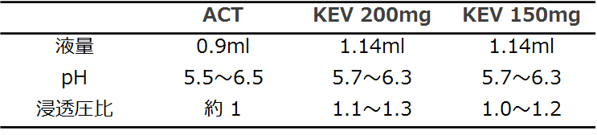

8. KEVの使用成績調査を実施するので使用して下さい？

KEVの使用成績調査を実施するので使用して下さい。

KEVは効果・安全面ともにACTを超える薬剤ではないと考えておりますが、専門医として試してみたいお気持ちは理解しております。その際には是非、実際のKEV使用感を教えて下さい。
- ・どのlineですか？
- ・患者さんの背景はどうですか？
- ・200mgですか、150mgですか？
- ・ACTとの比較や注射時の痛みの違いはありましたか？

KEVはACTより液量が多く、浸透圧比も高いので痛みが発生する可能性有り